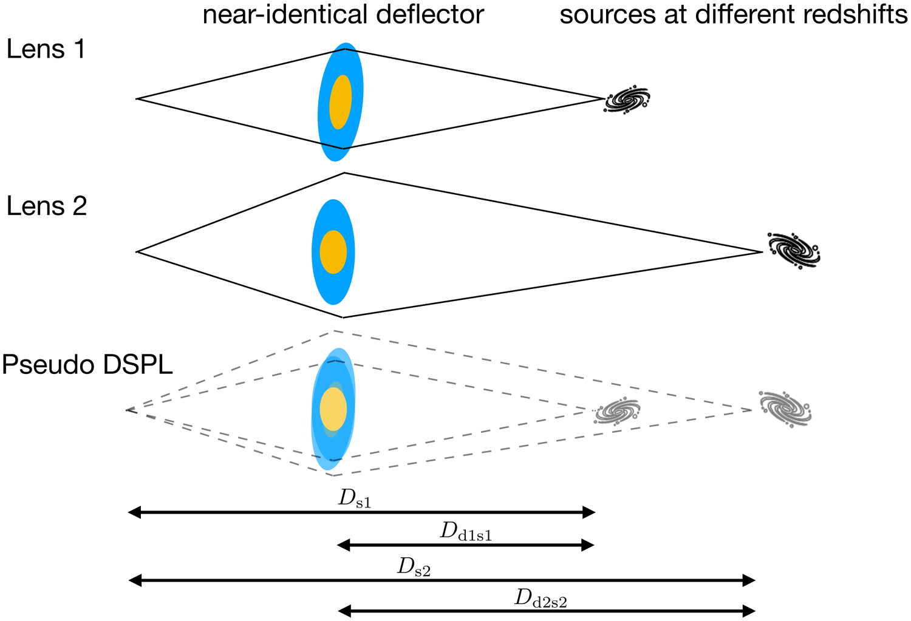
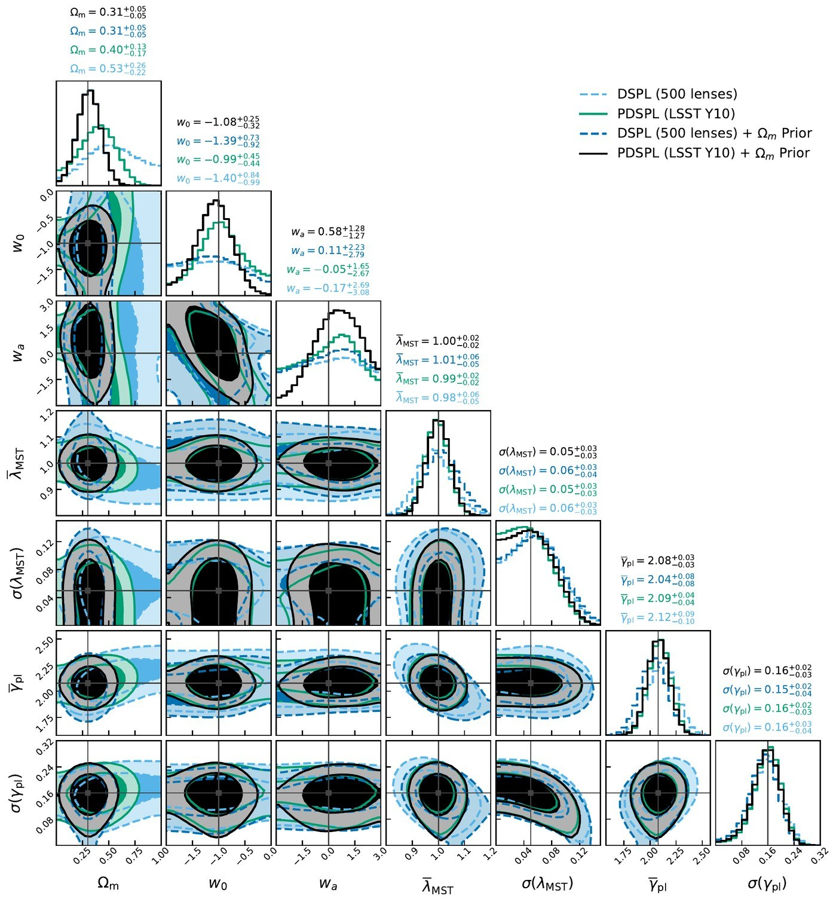

Strong lensing tomography
A lens with sources at two distances forms two rings. For a given mass profile, the ratio of their sizes no longer depends on the lens mass, only on cosmological distances. Such systems are rare, so I show how pairs of ordinary lenses can be analysed in the same way.
↓ Scroll to step through the figure (4 steps)Skip to the summary
Light bent into a ring
A massive galaxy sits almost exactly in front of a more distant one. The distant galaxy's light is bent around the deflector into arcs along the Einstein radius.
That radius depends on the deflector's mass and on distances: for an isothermal lens, θE ∝ Dds/Ds.
Two rings, one lens
Add a second, more distant source and it forms a larger ring: a double-source-plane lens.
For an isothermal lens the mass cancels, and so does H0: the ratio depends only on distances, which are set by the expansion history, and so by dark energy.
Perfect alignments are rare
Only a handful of double-source-plane lenses are known. Their constraints are limited by the mass-sheet degeneracy, and the nearer source also lenses the farther one.
Upcoming surveys (LSST, Euclid, Roman) will instead find very large numbers of ordinary single-source lenses.
Two lenses, read as one
Pair separate lenses whose deflectors are near-identical. Treat B's source as a virtual second source behind A, and the pair can be analysed like a double-source-plane lens.
This avoids the intermediate-source problem by construction. A hierarchical model forecasts dark-energy constraints from the LSST lens sample while accounting for the mass-sheet degeneracy.
In short
Rings at two distances
When a massive galaxy lies almost exactly in front of a more distant one, it bends the distant galaxy's light into a ring. The ring's radius, the Einstein radius, depends on the lens mass and on the distances between observer, lens and source.
If a second source lies even farther behind, it forms a second, larger ring. For an isothermal lens, the ratio of the two radii no longer depends on the lens mass or on the Hubble constant, only on a ratio of distances (for other mass profiles, the profile enters too). That ratio is set by how the universe expanded, and so it measures dark energy.
These double-source-plane lenses are rare, and two effects limit them: the mass-sheet degeneracy, and the nearer source acting as a second lens for the farther one. In our paper we pair separate single-source lenses whose deflectors are near-identical, and analyse each pair as a pseudo double-source-plane lens. A hierarchical model forecasts the dark-energy constraints this gives from the lens sample expected from LSST, accounting for the mass-sheet degeneracy.
From the paper

